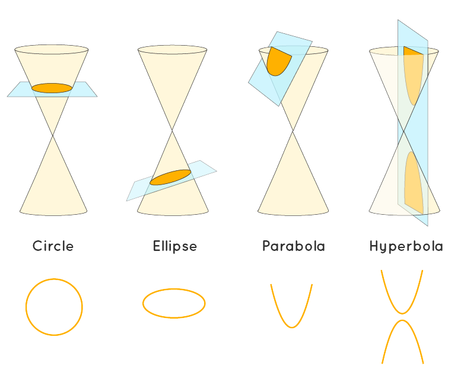
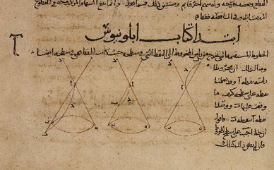

Maths of Conic Sections
Maths of Conic Sections
Conic sections are the curves generated when intersecting a double cone with a plane. Of these four curves can appear: circles, elipses, parabolae and hyperbolae. These relate to orbits between two massive bodies, for example the Earth orbits the Sun in an almost circle-like elipse, and various comets pass earth with a hyperbolic trajectory.
The following possible cuts produce a possible orbit when performed on a double cone (which is two cones with one inverted 180 degrees ontop the other): straight through, at a slight angle, paralell to the edge of the cone and at a steep angle. These cuts produce the concic sections described earlier, as seen in the image below.
Conic sections were first understood by Greek mathematicians in the third century BC, with the greatest leap in progress put forward by Apollonius of Perga in his work Conics. However they were scarcely used for millenia until rediscovered by Reannaiscance astronomers like Kepler.

9th century Arabic translation of Apollonius' Conics
There was the future of the human race almost trembling in the balance; for had not the geometry of conic sections already been worked out in large measure, and had their opinion that only sciences apparently useful ought to be pursued, the nineteenth century would have had none of those characters which distinguish it from the ancien régime.
Charles Sanders Pierce
American scientist, mathematician, logician, and philosopher
Research links
- Project URL www.example.com
- Project URL www.example.com
- Project URL www.example.com
- Project URL www.example.com